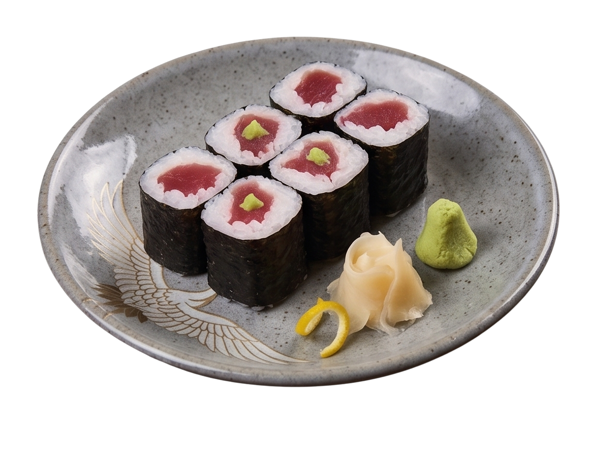
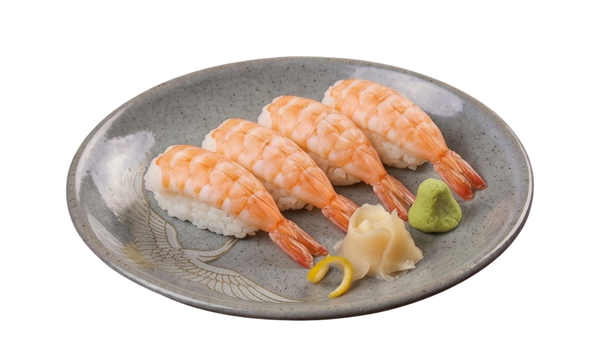
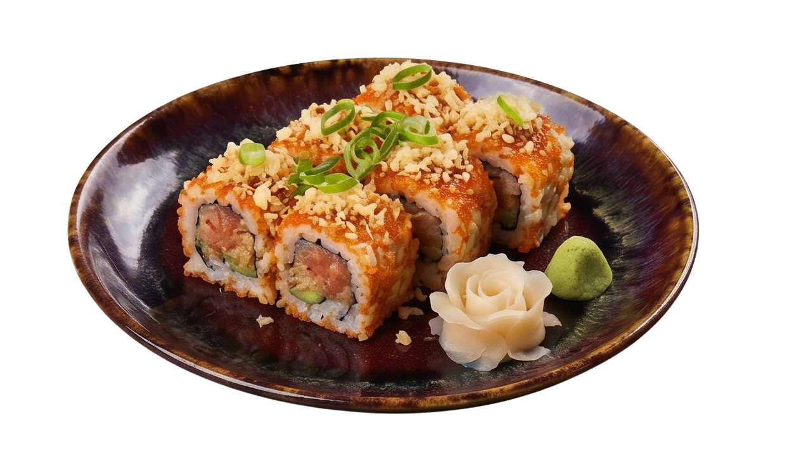
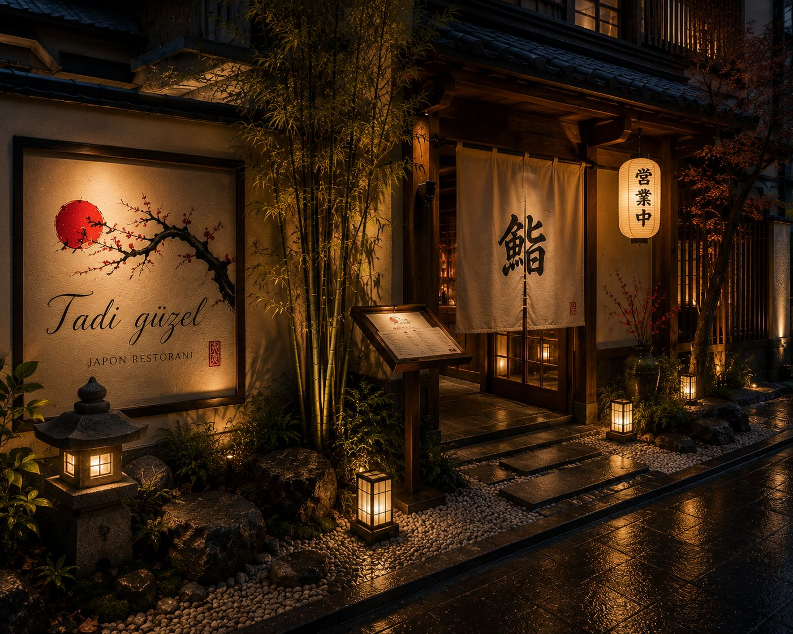
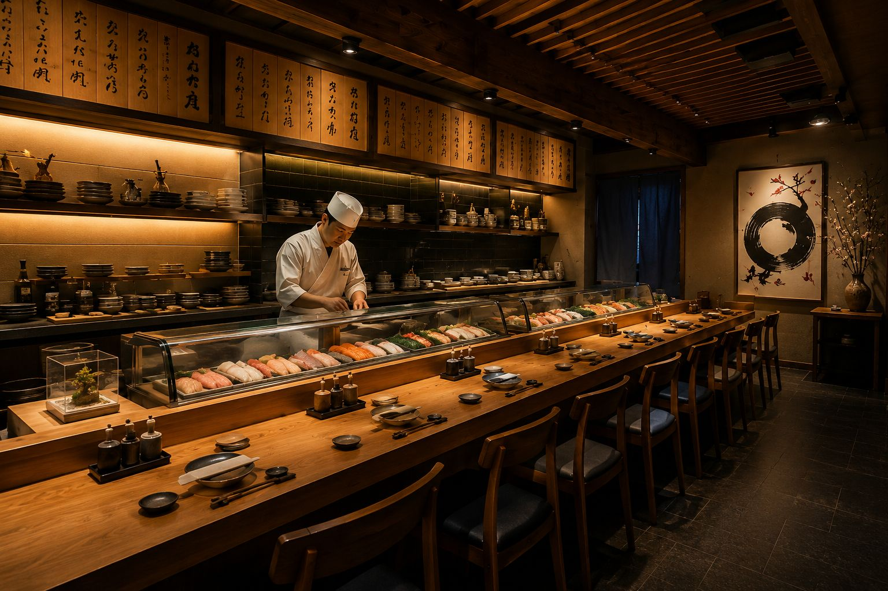
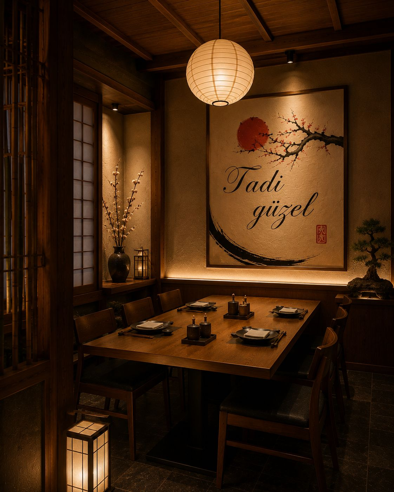

GALERİ
YEMEKLER

Sushi Tabağı
Denizin tazeliğini şefin parmak uçlarıyla birleştirdik; her sushi tabağında bir Japon sanatı gizli.

NİGİRİ
En taze balık dilimlerinin, şefin özel sirkeli pirinciyle kusursuz buluşması. Geleneksel Japon sanatının en yalın hali.

ROLLS
İçindeki renkli malzemeler ve dışındaki çıtır dokunuşlarla; modern sushi sanatının en sevilen hali.
MEKAN

DIŞ MEKAN
Gece ışıklandırmalı restoran girişi.

Bar Alanı
Şeflerin hazırlık yaptığı açık alan.

İÇ MEKAN
Sıcak ve modern Japon atmosferi.